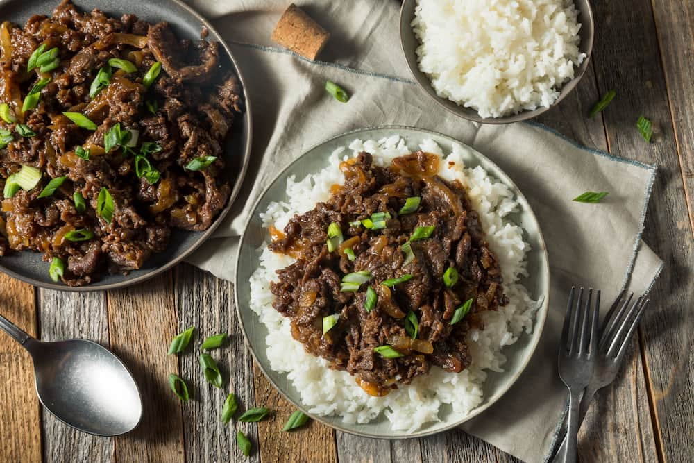

Opcion de Carnes Rojas
Sabores intensos y clásicos que nunca fallan. Cortes jugosos, cocciones al punto justo y combinaciones pensadas para disfrutar una comida contundente y llena de carácter. Ideales para cuando querés un plato fuerte y bien argentino.
Opcion de Carnes Blancas
Opciones más livianas pero igual de sabrosas. Pollo y otras carnes blancas preparadas de forma simple o con toques especiales, perfectas para una comida equilibrada, fresca y versátil.
Chuletas marinadas al tequila con papas especiadas
Esta receta combina el sabor intenso de las chuletas de cerdo marinadas en tequila, lima y especias, con la textura crocante de unas papas al horno condimentadas. Es un plato que mezcla lo fresco y cítrico con lo ahumado y dulce, ideal para una comida especial con un toque diferente.
- 4 chuletas de cerdo
- 60 ml de tequila
- Jugo de 1 lima o limón
- 2 dientes de ajo picados
- 2 cucharadas de aceite de oliva
- 1 cucharada de miel o azúcar rubia
- 1 cucharadita de pimentón ahumado
- Pimienta negra a gusto
- Sal (agregar al final)
- 1 kg de papas
- 3 cucharadas de aceite de oliva
- 1 cucharadita de pimentón
- 1 cucharadita de ajo en polvo
- ½ cucharadita de comino
- ½ cucharadita de romero o tomillo
- Sal y pimienta a gusto
Marinar las chuletas, en un bol mezclá el tequila, el jugo de lima, el ajo, el aceite de oliva, la miel, el pimentón y la pimienta. Sumergí las chuletas en la marinada, cubrilas bien y dejalas reposar mínimo 1 hora (ideal 3 a 4 horas en heladera). La sal se agrega recién antes de cocinarlas para que no se sequen.
Preparar las papas, pela (o no, a gusto) y cortá las papas en cubos o gajos. Mezclalas con el aceite de oliva, las especias, sal y pimienta. Llevá a horno fuerte (200 °C) durante 35–40 minutos, dándolas vuelta a mitad de cocción, hasta que estén doradas y crocantes.
Cocinar las chuletas, calentá una plancha o sartén grande a fuego medio-alto. Salá las chuletas y cocinalas 4–5 minutos por lado, hasta que estén bien doradas. Si querés, podés agregar un poco de la marinada a la sartén y dejar reducir unos minutos para usarla como salsa.

Bulgogi "carne de fuego"
El bulgogi es un clásico coreano: carne marinada en salsa de soja, ajo y pera, luego salteada con verduras. Su nombre significa “carne de fuego”.
- 600g de filetes de ternera (lomo bajo, solomillo, tapilla…) u otra carne magra
- 1 cebolla pequeña
- 1 cebolleta
- 1 zanahoria
- Semillas de sésamo tostado para decorar (opcional)
- 1 cda. de aceite vegetal (de oliva no)
- 4 cdas. de salsa de soja
- 2 cdas. de salsa gochujang (opcional)
- 1 cda. de aceite de sésamo tostado
- 2 cdas. de azúcar moreno o miel
- 2 dientes de ajo rallados
- 1 cdita. de jengibre rallado
- 1/2 pera pelada rallada
- 1/4 cucharadita de pimienta negra molida
Para preparar el bulgogi, fileteá la carne en láminas bien finas; para facilitar el corte, conviene que esté casi congelada. En un bol, mezclá todos los ingredientes del marinado hasta integrarlos por completo y añadí la carne, asegurándote de que quede bien impregnada. Tapá y dejá reposar en la heladera al menos dos horas, aunque lo ideal es marinarla entre cuatro y seis para intensificar el sabor.
Mientras tanto, cortá la cebolla y la zanahoria en tiras finas y la cebolleta en rodajas diagonales. Calentá una sartén grande a fuego alto con el aceite y cociná la carne en tandas, sin encimarla, hasta que esté dorada y caramelizada. A mitad de cocción, incorporá parte de las verduras y salteá todo junto. Serví de inmediato, espolvoreado con sésamo tostado y cebolleta picada.

Pechugas de Pollo a la Mostaza con Cebolla Caramelizada
Esta receta consiste en unas pechugas de pollo doradas y jugosas, cocinadas en una salsa cremosa de mostaza con cebolla caramelizada. Es un plato simple pero muy sabroso, que combina el toque suave de la crema con el sabor intenso de la mostaza y el dulzor de la cebolla. Ideal para una comida práctica y casera, pero con un resultado elegante y lleno de sabor.
- 3 pechugas de pollo deshuesadas
- 1 cebolla pequeña
- 200 ml de crema de leche
- 1 cdta de azúcar rubia
- 1 cda de mostaza dijon
- 1 cda de ajo picado con aceite de oliva1 cda.
- Orégano a gusto
- Pimentón paprika a gusto
- Pimienta a gusto
- Cebolla en polvo a gusto
- Sal de mar a gusto
- Aceite de oliva
- Ciboulette
Colocá las pechugas de pollo en un bol, condimentalas con aceite de oliva y especias, y dejalas reposar al menos 30 minutos para que absorban bien el sabor. Luego cocinalas en una sartén caliente, a fuego bajo, durante 5–6 minutos por lado hasta que estén bien hechas, y retiralas.
En la misma sartén, cociná la cebolla hasta que esté dorada y tierna. Agregá el ajo picado y el azúcar, y cociná un minuto para que se caramelice. Incorporá la mostaza y la crema, mezclando hasta lograr una salsa homogénea. Volvé a colocar el pollo en la sartén y dejalo cocinar unos 5 minutos más en la salsa para que se integren los sabores. Terminá con ciboulette picado y serví con el acompañamiento que prefieras.
Salmón glaseado
Esta receta se trata de un salmón dorado y jugoso, glaseado con una salsa agridulce de miel y soja con un toque cítrico de limón y un leve picante de cayena. Es un plato equilibrado y lleno de sabor, donde lo dulce, lo salado y lo ácido se combinan para realzar el sabor natural del pescado. Ideal para una comida liviana, elegante y fácil de preparar.
- 50 ml de miel
- 50 ml de salsa de soya Gourmet
- Jugo de ½ limón
- 1 cdta de pimienta cayena Gourmet (o a gusto)
- 1 cda de aceite de oliva
- 500 g de filete de salmón
- Sal de mar Gourmet a gusto
- Mix de pimientas Gourmet a gusto
- 3 cdtas de ajo picado con aceite de oliva Gourmet
- 1 limón, cortado en rodajas
Primero, en un bowl mezclá la miel, la salsa de soja, el jugo de limón y la cayena, y reservá esta preparación. Mientras tanto, calentá un poco de aceite en una sartén a fuego medio-alto junto con el ajo picado para perfumar el aceite.
Colocá el salmón con la piel hacia arriba, condimentalo con sal y pimienta, y cocinalo durante aproximadamente 6 minutos, hasta que esté dorado por fuera. Luego daló vuelta, agregá un poco más de aceite de oliva si es necesario para evitar que se pegue, e incorporá la mezcla de miel junto con algunas rodajas de limón.
Dejá que la salsa se reduzca mientras se cocina el pescado, y con una cuchara bañá el salmón con la misma salsa para que absorba bien el sabor. Cuando la salsa esté más espesa y el salmón en su punto, servilo caliente.